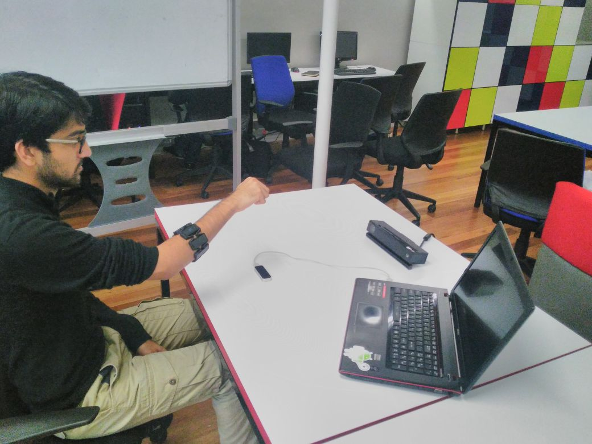

Progress
The team has now completed their project proposal and is busy with compiling the revised document based on feedback received in their presentation. They have begun piloting their data gathering process. The focus from here will be on obtaining ethical clearance from the department so that they can begin compiling the project's dataset.
 The proposed set up for gathering data from all the devices simultaneously.Meeting minutes
Meetings were held on the 19th, 21st and 23rd for the following purposes:
- 19 June, 10 am: The team met to pilot their data gathering technique. Issues were discovered with the batch script used to manage the process. The Kinect needs to be positioned further away from the participant than anticipated earlier.
- 21 June, 9 am: Erin met with Edwin to resolve issues with the project proposal. The primary issue that was raised was the issue of the readability of the document for readers not familiar with the subject domain.
- 21 June, 1.30 pm: The team met with the supervisors to go over the application for ethical clearance. Issues were identified in the description of the participants required, as well as the informed consent and anonymity the study can provide.
- 23 June, 12 pm: The team met to pilot their revised data gathering technique.
Additional work
The following deadlines have been set for the next set of deliverables:
- 22 June: The revised ethical clearance proposal shall be submitted to both supervisors.
- 30 June: The updated project proposal must be submitted on Vula.
Next milestone
The next milestone will be achieving ethical clearance.